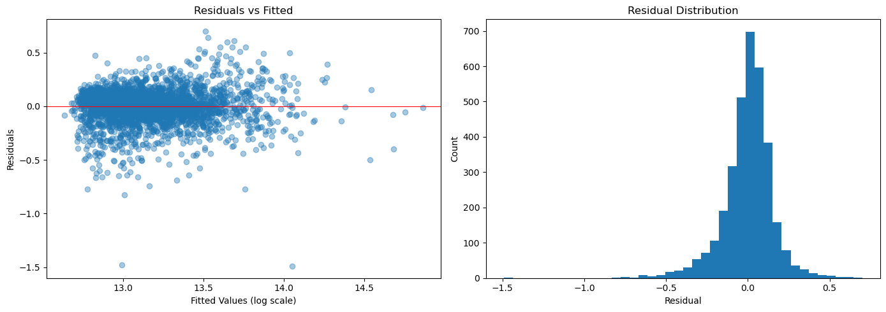

Mathematics & Computer Science · University of Washington Tacoma
I'm an undergraduate at the University of Washington Tacoma studying mathematics and
computer science. What I enjoy most is solving hard problems and helping other people learn.
I'm finishing a B.S. in Mathematics and a B.A. in Computer Science and Systems at the
University of Washington Tacoma, graduating in June 2027. My coursework runs from abstract
algebra to algorithms.
Teaching is where I want to build my career. As a peer facilitator for UW Tacoma's Calculus
Collaborative Learning Seminar, I plan and lead twice-weekly workshops and write the
worksheets we work through. Helping someone get to those "a-ha!" moments is the part of
mathematics I enjoy most.
I'm applying to graduate programs for Fall 2027, with the goal of teaching mathematics at the
college level. In my free time, I'm usually hiking, gaming, or planning my next trip.
Projects
Calibrating truncated synthetic regression data
Undergraduate research · senior capstone · advised by Dr. David Arthur
Tools that generate practice datasets for statistics courses let an instructor declare
targets, such as a mean, a standard deviation, and a strength of relationship
(R2), while keeping every value inside realistic bounds. Enforcing those
bounds after calibration pulls the data away from its targets. I derived closed-form maps
from a regression model's parameters to the realized mean, variance, and
R2 of truncated normal data with any number of predictors, and solve for
the parameters that hit the targets. The method is implemented for DagFlow, a dataset
generator for statistics education developed by Dr. David Arthur, and validated through
its sampler.
Manuscript in preparation.
Challenges and key learnings
Challenge: the defect wasn't visible in the code, only in the data it produced. Finding it meant running controlled simulations where the theory predicted the answer before each run.
Learning: validation has to run through the tool the paper describes, so I ported my method into the engine's own Python sampler instead of validating it on a separate copy.
Learning: be exact about what's new. Other methods can hit the same targets, and saying plainly that this one adds a known generating model made the work stronger, not weaker.
Python
NumPy
SciPy
R
LaTeX
Calculus Collaborative Learning worksheets
Teaching materials · UW Tacoma Calculus I and II
Original worksheets and solution keys I write for the Calculus Collaborative Learning
Seminar, built around group problem-solving in twice-weekly workshops.
Challenges and key learnings
Challenge: writing problems a group can work through together, ordered so each one builds on the last and surfaces misconceptions early.
LaTeX
Tacoma home price estimator
Applied data science project · TSTAT 280 · Spring 2026
A web app that estimates sale prices for Tacoma homes from a street address and a few
details about the house. I cleaned about 4,200 MLS sales records, fit a LassoCV regression on
log price (R2 = 0.757 on held-out data), and used a KNN classifier on
geocoded addresses to fill in the MLS area, so users never need to know it. The app runs in
Streamlit.

Residuals of the final LassoCV model on the log price scale.
Challenges and key learnings
Challenge: cutting 190 columns of MLS data down to features a homeowner could actually enter.
Challenge: location was the strongest predictor, but few people know their MLS area. Geocoding the address and predicting the area with KNN solved that.
Learning: LassoCV matched the full model's accuracy while dropping 23 terms, and a simpler model is easier to deploy and explain.
University of Washington Tacoma · Calculus I and II
Plan and lead twice-weekly workshops for about 15 calculus students, with original worksheets and solution keys.
Private Physics Tutor2025
Self-employed · high school students
Physics and Chemistry Tutor2010 – 2011
Green River College
One-on-one and small-group tutoring for more than 100 students.
Research
Undergraduate Research Assistant, DagFlow ProjectJune 2026 – present
University of Washington Tacoma · PI: Dr. David Arthur
Funded summer position, continuing as my senior mathematics capstone through March 2027.
Research Experience for Undergraduates, Hooked on PhotonicsSummer 2011
University of Washington, Seattle
Compiled and analyzed sampling data in MATLAB for a study of arsenic concentrations in apple juice.
Education
University of Washington TacomaExpected June 2027
B.S. Mathematics and B.A. Computer Science and Systems · Most Outstanding Junior, Mathematics (2026)
Skills
Scientific computing
Python (NumPy, SciPy), R — root-finding, simulation, validation
Data science
pandas, scikit-learn, Jupyter, Streamlit
Programming
Java, C/C++, MATLAB, SQL
Tools
Git, LaTeX
Coursework
Abstract Algebra I–II, Foundations of Mathematical Reasoning, Applied Data Science, Data Structures and Algorithms, Theory of Computation, Operating Systems, Software Engineering